How PivCo works
- PivCo-Huffman, by Marcin Zukowski, 2026
- In OpenZL 0.3, arXiv 2606.05765
- GeoZL codecs
lanes(0x72D713) andplanar_zigzag_lanes(0x72D712)
Huffman is one of the oldest compression methods, and its bit order forces a decoder to read one code after another. PivCo keeps the Huffman codes but stores their bits in a different order, so many readers can decode the same block together. Eight symbols follow the whole path below, from Huffman codes to the bitmaps GeoZL writes.
Huffman, and why it is serial
The example string is a b a c a b a a. Five of eight symbols are a, so shorter codes save bits. Huffman builds a code where common symbols get short codes, so a becomes 0, b becomes 10 and c becomes 11.
Each code follows a path through the tree. The first bit says whether we go left (to a) or right. On the right there is one more choice, left for b and right for c. Because no code is the start of another, the codes need no separators. The concatenated stream has eleven bits, 01001101000.
Concatenation makes Huffman decoding serial. The fourth symbol cannot be located before decoding the first three. Watch the reader below. It can only box a code once it reaches the code's last bit, and only then does the next code have a start. The fourth symbol, the slot marked with a question mark, is found only after the three codes before it.

There is only one place to start reading, so a second reader has nothing to do until the first one is finished. Fast decoders hide some of the wait with lookup tables and several interleaved streams, but the chain itself stays. What a GPU needs explains why a chain like this is the main obstacle on a GPU.
Storing the bits by tree node
PivCo writes code bits in tree order instead of symbol order. Every symbol passes through the root, so the root gets one bit per symbol, which is the first bit of its code. Here, that is 01010100, where a 0 means a and a 1 means "b or c, ask the next node".
Only three symbols reach the “b or c” node. It stores their second bits as 010, where 0 means b and 1 means c. No symbol reaches a after the root, so it needs no later bitmap. The animation places all first bits at the root. Only the second bits of b, c and b enter the child in arrival order.

There are eight at the root and three at the child, eleven in total, exactly as many as the glued Huffman string. PivCo retains the codes and their eleven bits. Each bit moves to the node where decoding uses it. Each of these per-node bit strings is called a bitmap, and one bitmap holds the decision for every symbol that reaches its node.
Count the 1s before you
Give every symbol its own reader, called a thread in the animation. Thread t reads bit t of the root bitmap, and it can do that right away, because the root bitmap has exactly one bit per symbol in symbol order. Threads t0, t2, t4, t6 and t7 read a 0, so their symbol is a and they are done.
Threads that read 1 must locate their bit in the child. The child stores bits only for the symbols that went right, in the same order, so a thread's slot in the child is the number of symbols before it that also went right. Its child slot equals the number of earlier 1s in the root.
Thread t1 has no 1s before it and reads slot 0, a 0, so its symbol is b. Thread t3 has one 1 before it, reads slot 1 and finds c. Thread t5 has two, reads slot 2 and finds b. The animation shows eight root reads, five a outputs, one prefix sum, three child lookups and the b, c, b outputs together.

No thread waits for another symbol. Each one needs only a count. Popcount is a single machine instruction that returns the number of 1s in a word, so a thread masks off the bits after its own position, runs popcount, and has its slot. For bitmaps longer than one word, the threads add their per-word counts with a prefix sum. A deeper tree repeats this count and child move at every level.
The same counts also work in the other direction. A decoder can start at the leaves and merge each pair of children into its parent by the parent's bitmap, which is how GeoZL runs it on a GPU, described in Inside the GPU decoder.
The real format
The real format also specifies the tree, bitmap layout and block size. First, the tree. PivCo never writes the tree into the frame. It writes the Huffman weights, and the encoder and the decoder each rebuild the same tree from them. OpenZL caps the table log at 12, so no code is longer than 12 bits and no tree deeper than 12 levels.
Second, the bitmap layout. The nodes are written in pre-order, a node, then everything under its left child, then everything under its right child. What a node stores depends on its kind.
| internal node | a byte-aligned bitmap with one bit per symbol that reaches the node, 0 for left and 1 for right, then the count of 1s in it, unless both children are constant leaves |
|---|---|
| flat leaf | a byte-aligned, fixed-width index per symbol that reaches it, used where the rest of the subtree is complete and every remaining code has the same length |
| constant leaf | nothing, since every symbol that reaches it is the same |
Here, the root and the "b or c" node are internal. The a, b and c nodes are constant leaves. The block holds the root bitmap and its count of 1s, then the child bitmap without a count. The leaves store nothing.
The stored count of 1s is what lets a decoder navigate this layout without decoding anything. Pre-order puts the left subtree first, and the count says how many symbols went right, so the decoder knows how many symbols each child receives and can find where every node's data starts.
The count also validates the bitmap. Before any decoding starts, GeoZL counts the 1s in every bitmap, compares them with the stored counts, and rejects a frame where they disagree or where the tree is deeper than 12. When both children are constant leaves nothing follows that needs to be located, so the count is left out.
Third, block size. A real lane is far longer than eight symbols, so PivCo cuts it into blocks, each with its own set of node bitmaps. GeoZL writes blocks of 32768 symbols. Blocks are independent, so separate blocks can always decode at the same time, on top of the parallelism inside each block.
Byte lanes in GeoZL
PivCo codes bytes, so GeoZL splits wider samples into byte lanes. For a 16-bit raster, GeoZL uses transpose to split samples into low-byte and high-byte lanes before Huffman coding. The low and high bytes of a sample rarely follow the same distribution, so every lane is coded on its own, with its own mode. Mode 0 is PivCo. Mode 1 is byte PFOR, and the encoder keeps PFOR for a lane whenever it comes out smaller.
GeoZL exposes two codecs for this layout. lanes is the recipe id>lanes, and one-byte data has a single lane. planar_zigzag_lanes fuses planar>zigzag>lanes. Planar makes residuals, Zigzag makes them unsigned, and byte lanes are coded last.
Decoding runs these stages backwards. Every lane decodes on its own, as PivCo or as PFOR depending on its mode. A join then rebuilds each sample from its lanes, lane0 | lane1 << 8 for 16-bit data. For the fused codec the join also undoes Zigzag, and the inverse planar pass runs last.
PivCo-Huffman is Marcin Zukowski's design, described in arXiv 2606.05765 and shipped in OpenZL 0.3. GeoZL builds its byte-lane codecs and the fused planar variant on top of it.